J'ai construit, de A à Z, un pipeline de livraison sécurisé, sa supervision et la détection d'attaques, sur une machine virtuelle Ubuntu. Cette page rassemble tout le projet, et donne accès à chaque outil.
Tout tourne dans une seule machine virtuelle. Mon code part de GitHub, Jenkins le teste et le déploie dans Docker, pendant que Prometheus et Wazuh surveillent la machine.
Chaque carte ouvre l'outil sur la même machine que cette page. Le point vert indique qu'il répond. Les connexions restent protégées par leurs propres identifiants.
J'ai voulu qu'aucun code n'arrive en production sans avoir été testé, vérifié pour les secrets oubliés et scanné pour les vulnérabilités.
pytest, lancé dans un build Docker multi-stage.
2/2 réussisGitleaks analyse le dépôt.
0 fuiteImage multi-stage, utilisateur non-root, HEALTHCHECK.
image construiteTrivy, sévérités HIGH et CRITICAL.
0 vulnérabilitéContrôle de santé, puis retour automatique à la version précédente si ça échoue.
conteneur healthyTrivy avait trouvé 2 vulnérabilités HIGH sur zlib1g. Je les ai corrigées en mettant le paquet à jour dans le Dockerfile : il en reste 0.
[Tests] 2 passed [Gitleaks] no leaks found [Trivy] 0 vulnerabilities [Deploy] container healthy Finished: SUCCESS
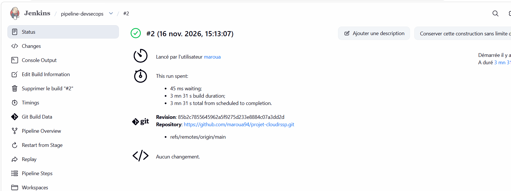
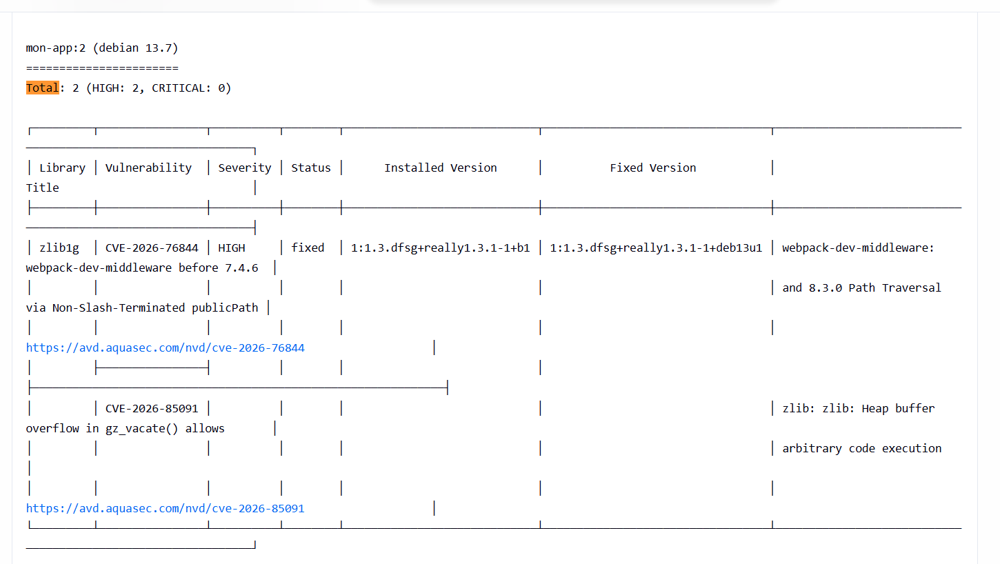
Un pipeline qu'on n'a jamais vu échouer ne prouve rien. J'ai donc cassé le projet trois fois, volontairement, pour vérifier que chaque garde-fou se déclenche.
J'ai changé la réponse de /health de « ok » à « ko ». Le test test_health échoue, le build #4 devient rouge et les quatre étapes suivantes ne s'exécutent pas.
J'ai ajouté un faux fichier demo_secret.py contenant une fausse clé d'API. Gitleaks la détecte (règle generic-api-key), masque sa valeur et bloque le build #6.
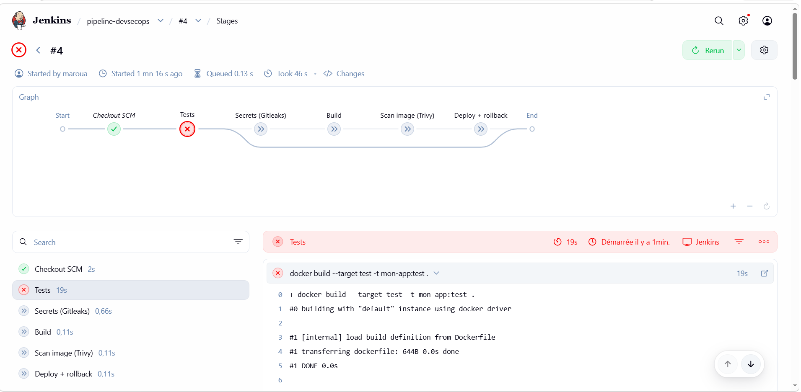
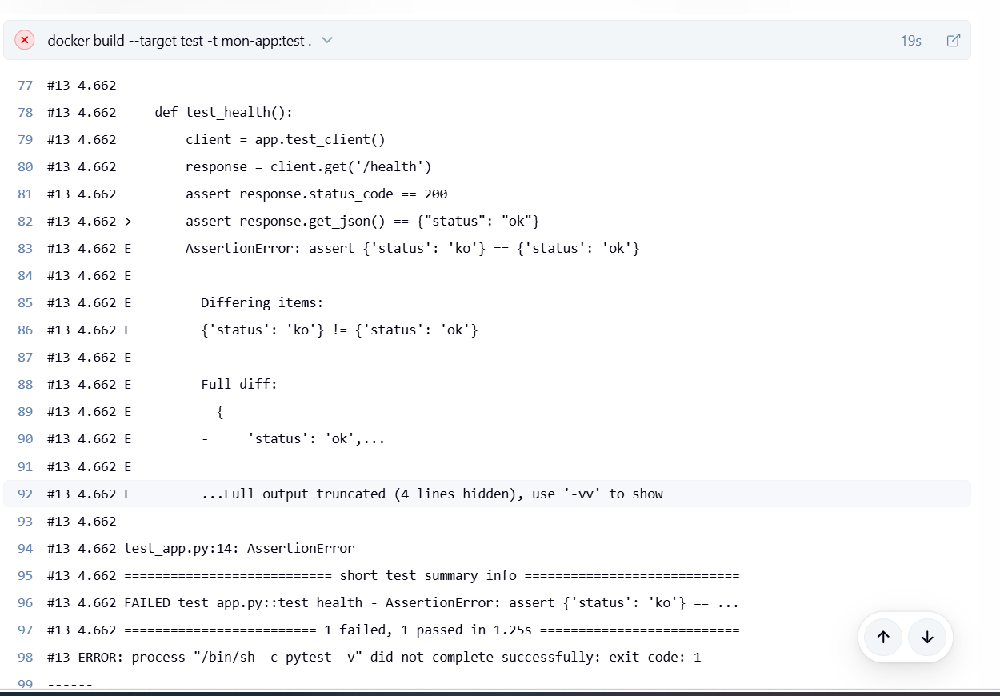
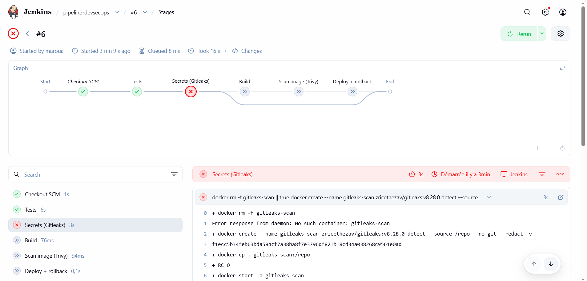
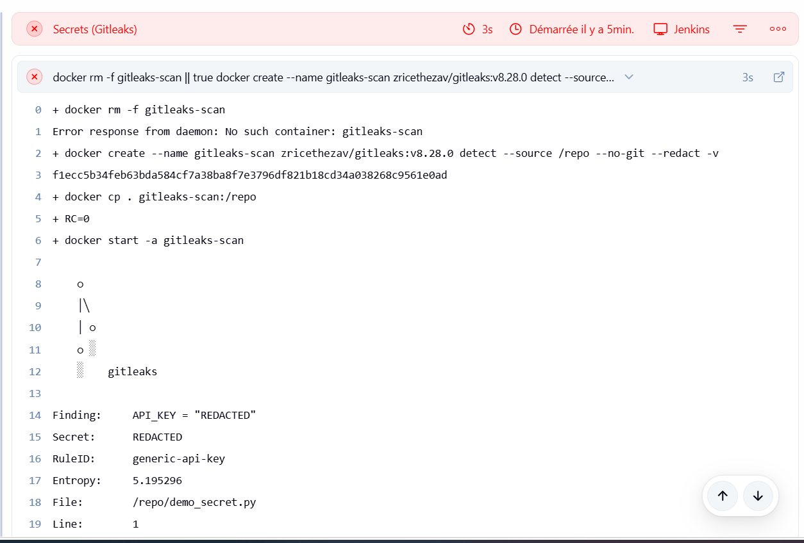
J'ai changé l'adresse du HEALTHCHECK dans le Dockerfile (/healthz, qui n'existe pas). Les tests, Gitleaks et Trivy passent, mais le conteneur déployé reste « unhealthy ». Après 20 contrôles, le pipeline supprime la nouvelle version, relance l'ancienne image et s'arrête en erreur. Pendant ce temps, l'application a continué de répondre.
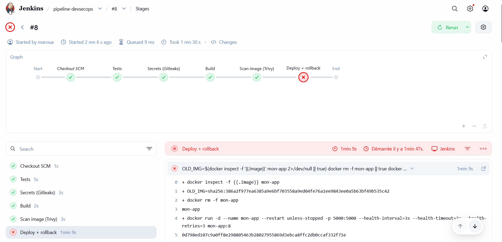
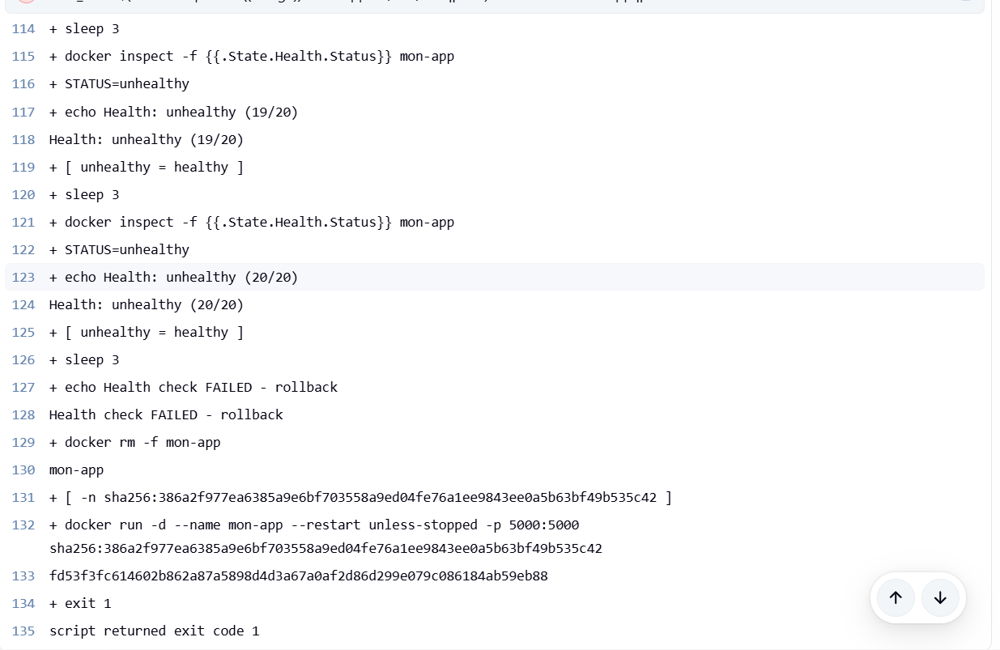
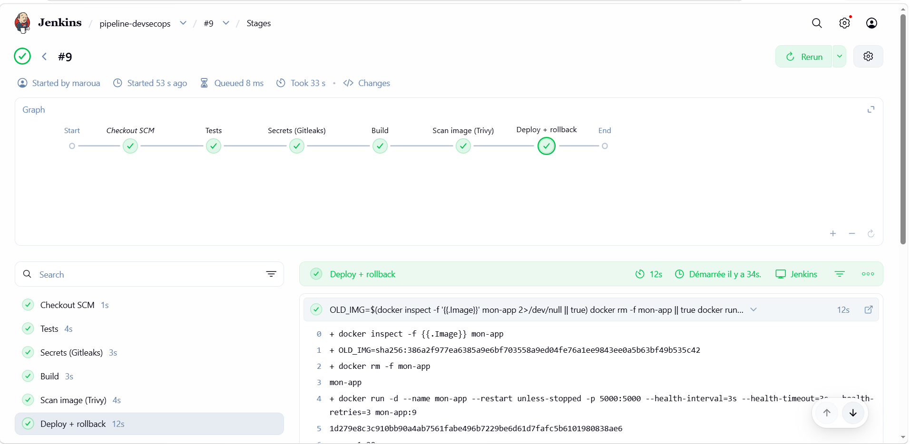
Prometheus (v2.55.1) interroge Node Exporter toutes les 15 secondes. Grafana affiche ces mesures dans le tableau « Node Exporter Full » (ID 1860).
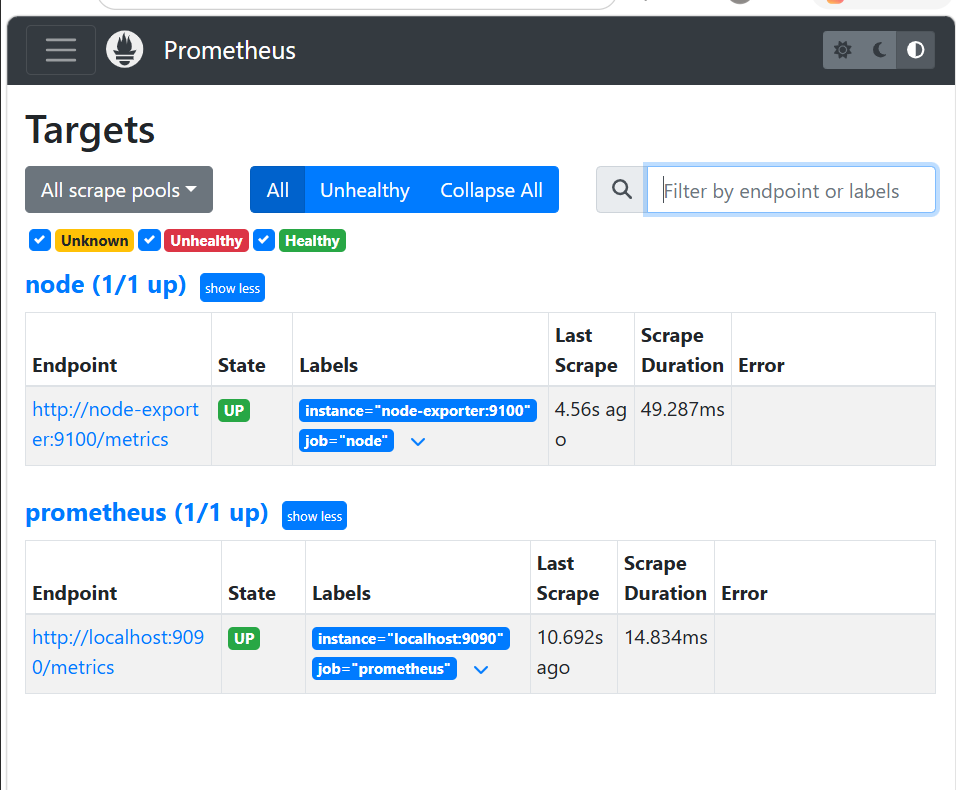
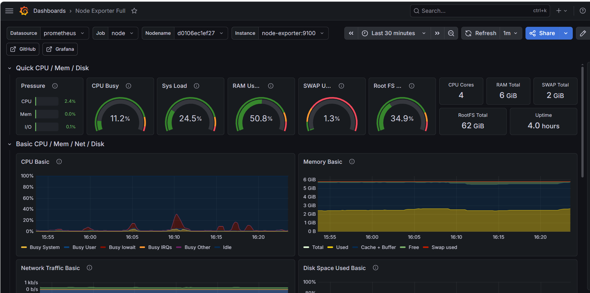
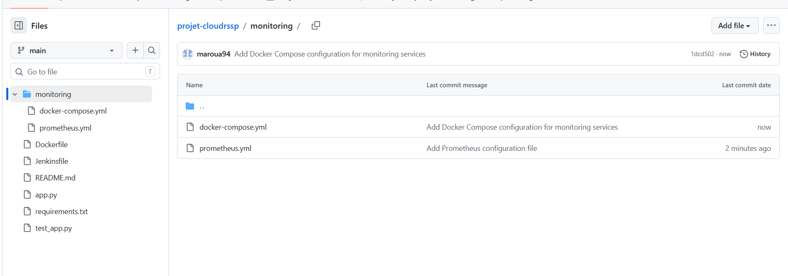
J'ai simulé une attaque par force brute en SSH contre la machine. Wazuh l'a détectée et l'a associée aux techniques MITRE ATT&CK.
| Règle | Ce qu'elle détecte | MITRE ATT&CK |
|---|---|---|
5710 | Tentative de connexion avec un utilisateur inexistant | T1110 · Brute Force |
5712 | Force brute SSH | T1110 · Brute Force |
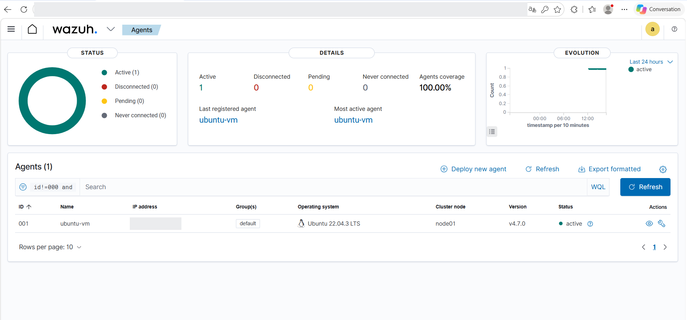
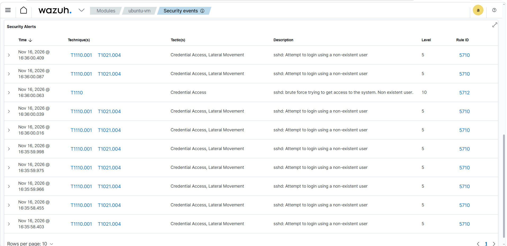
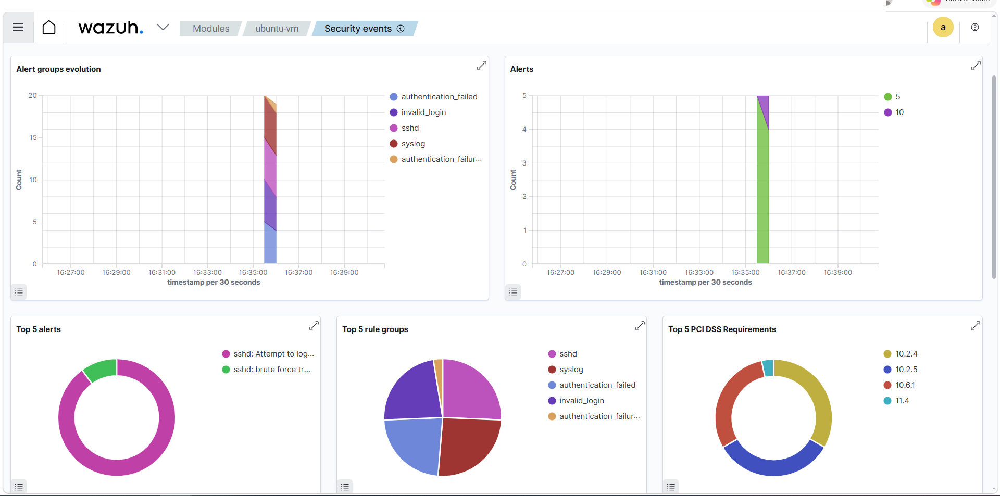